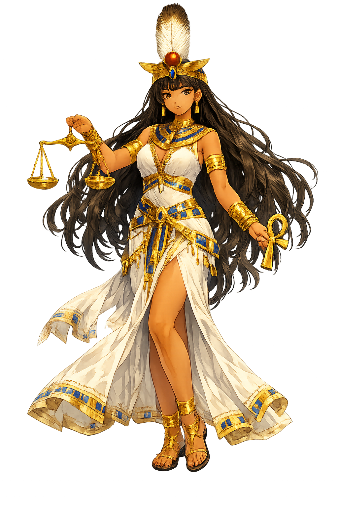

The Authentic Orthography
Truth, Justice, Order · Truth, straightness (Egyptian mꜣꜥt)

Why Mꜣꜥt.com is the correct form
𓁦
The name in its original Egyptian form. Mꜣꜥt (𓁦) is attested as truth, justice, order — “Truth, straightness (Egyptian mꜣꜥt)”. Its Egyptological ain and alef letters carry the full phonetic and orthographic weight of the source tradition.
maat
Reduced to plain maat, the name loses everything that made it specific: Egyptological ain and alef letters. What remains is an ASCII string that machines can parse but that no longer speaks with its original voice.
Mꜣꜥt
The Unicode restoration recovers what ASCII flattened. Mꜣꜥt restores Egyptological ain and alef letters, returning the name to its original written dignity. The domain encodes to Punycode, but the browser displays the truth.
Mꜣꜥt.com → xn--mt-sq8hia.com
The non-ASCII characters in Mꜣꜥt are encoded while the ASCII remains visible. To the DNS, it is Punycode. To humanity, it is Mꜣꜥt.
How Mꜣꜥt travels from ancient script to scholarly transliteration
How Mꜣꜥt was spoken
The domain of Mꜣꜥt
In the egyptian tradition, Mꜣꜥt governed truth, justice, order. The name encodes a sphere of power that shaped ritual, narrative, and social order.
undefined
undefined
Stories of Mꜣꜥt
Mꜣꜥt is the Egyptian cosmos made moral. She is truth, straightness, the even plumb line, the feather against which the heart is weighed, and the divine order that keeps the sun on course and the Nile within its banks. Unlike a law code, Maat is a state of being: the king upholds her, the priest recites her, the scribe writes her, and the justified dead speak her name before the gods. To live in Maat is to move in harmony with the structure of reality itself. Maat's principle governed law, astronomy, architecture, and ethics. Temples were oriented to cosmic axes, judgments weighed against her feather, and kings ruled as her deputies. Even Akhenaten's solar revolution phrased itself in Maat's language, demonstrating that the concept was too fundamental to be overthrown, only reinterpreted.
In Egyptian cosmogonic texts, Maat comes into being at the very first moment of creation. The Memphite Theology preserved on the Shabaka Stone describes Ptah conceiving the world through the heart's thought and the tongue's command, with Maat as the ordering principle that makes creation stable. Other hymns say that Re “lives on Maat” each morning, feeding upon her as nourishment. Without Maat, the sun would not rise, the stars would stray, and the chaos that existed before the world would rush back in.
The most famous scene in Egyptian funerary religion shows the heart of the deceased being weighed on a balance against the feather of Maat. The ibis-headed god Thoth records the result, while the monstrous Amemet, “the Devourer,” waits nearby to consume those whose hearts prove heavy with sin. This is not merely a legal trial but a metaphysical test: the heart must be light because it has lived in accordance with the straightness Maat represents. Those who pass are declared true of voice and admitted to the company of the gods.
Kings throughout Egyptian history presented small images of Maat to the gods in temple ritual, symbolically restoring cosmic order to its source. The act declared that the pharaoh's reign was not tyranny but stewardship: he kept the world aligned with Maat so that Maat could keep the world in being.
In the myth of the Destruction of Mankind, Re grows weary of human rebellion and sends his fierce Eye—often identified with Sekhmet or Hathor—to punish the earth. Her violence is so thorough that the gods fear nothing mortal will survive; they trick her into drunkenness by flooding the fields with beer dyed red like blood. When the frenzy subsides, Maat is restored to the divine king and the world is re-established on its proper foundation. The story dramatizes Maat not as static balance but as the active restoration of harmony after divine wrath has threatened to unmake creation.
Names are not merely labels; they are compressed worlds. Mꜣꜥt carries within it a egyptian understanding of truth, straightness (egyptian mꜣꜥt). Unicode restoration returns that world to readable form.
Enter Extended Lore